Software Engineering
SCC. 120: Fundamentals of Computer Science
DM: Sets
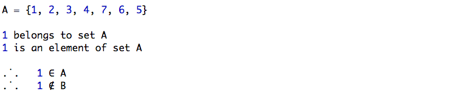
Sets and membership
- Collection of unordered objects with no duplicate values.
- Members of sets denoted as

Defining Sets
- Listing properties that its members must satisfy (enumeration).
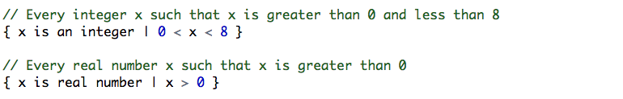
Set Operations |
Union | Forms new sets from 2 sets consisting of all elements, no duplicates. | 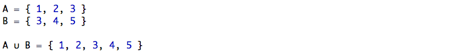 |
Intersection - Bridge two sets together.
| New set consisting elements from both sets (common elements), no duplicates. | 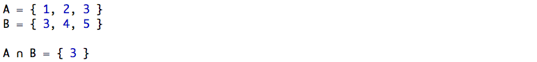 |
Difference | New set with all elements from first set that are NOT in the second set. | 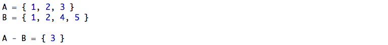 |
Cartesian Product - Elements from multiple sets.
| New set with all ordered pairs. | 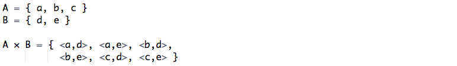 |
Types of sets |
Empty set () | Set with no element, contains no objects. | 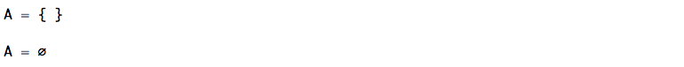 |
Subset ( ) ) | Every element in A is also contained in B. | 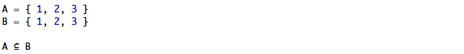 |
Proper subset () | Every element in A is also contained in B, and there is at least one element in B that is NOT contained in A | 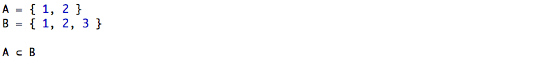 |
Universal set () | All sets under consideration are subsets. | 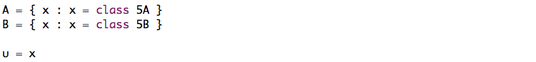 |
Complement set () | Elements in union which are in B but not A.
| 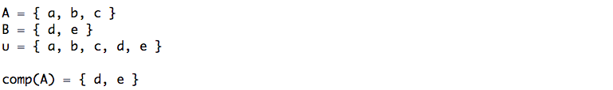 |
DM: Relations
Association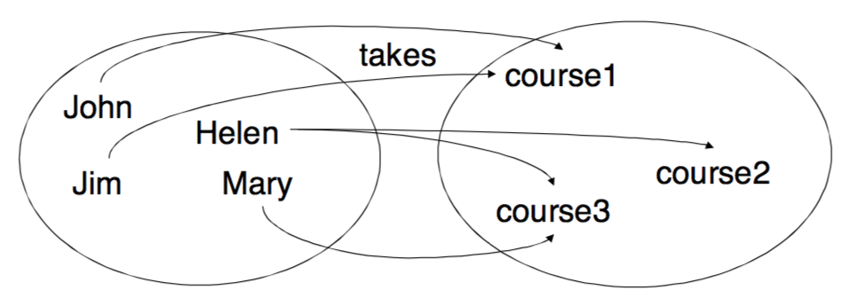
- Sets of related objects
- Order does not matter
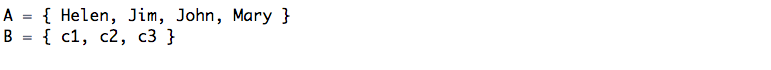
Tuples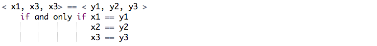
- Ordered n-tuple
- Set of ‘n’ objects with an order associated
- N-ary relation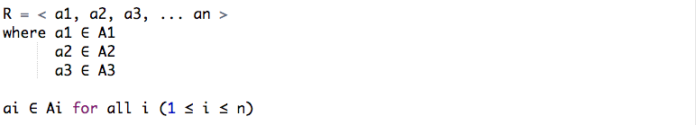
- Set of ordered n-tuples
- Two relations are equal if and only if same sets and the set of things related are the same.
Diagraphs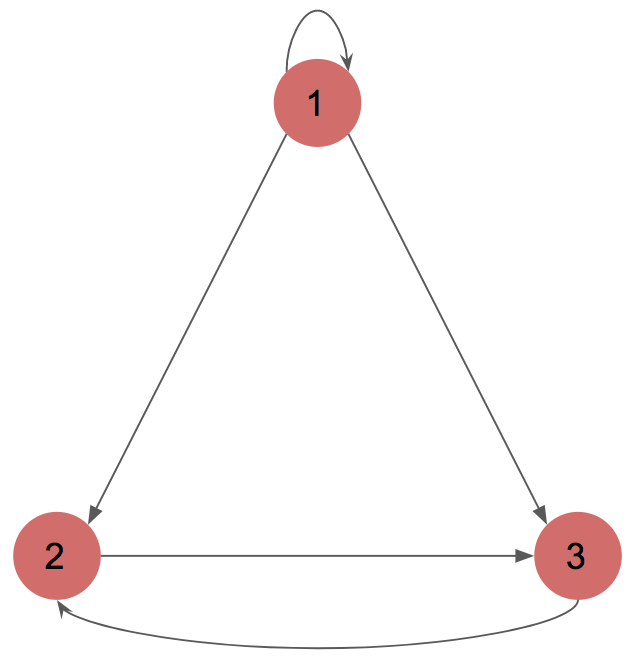
- Directed graph composed of points (vertices, nodes) and arrows (arcs) which connect points together.
- Must be ordered i.e. G = (P, A)
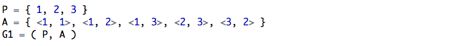
Properties of Diagraphs
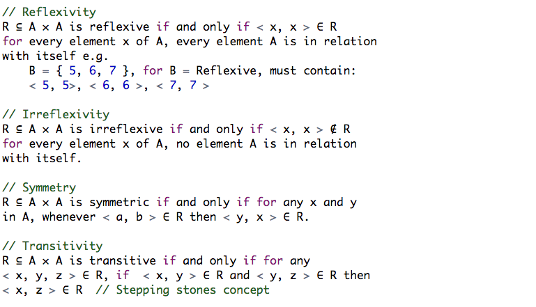
DM: Functions and Recursion
Function
- Special type of binary relation, associates each set element with unique element of another set.
- Can only return a single result
- Domain:
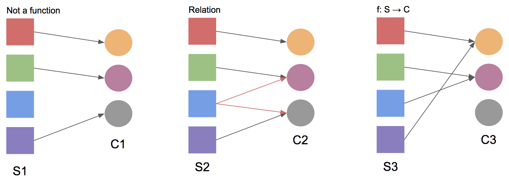
- All elements in S must be used up
- Element from S can only have one relation.
- Multiple elements from S can be related to C.
Bijection
- Every element of one set paired with exactly one element of other set, no unpaired.
- Inverse → reversing a function f-1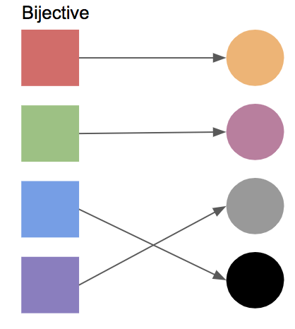
// Make it y = …
// Swap x for y
// Solve for y
Algebraic Functions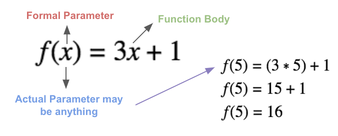
- We can add, subtract, multiply and divide functions using simple algebra.
Composition Functions
- Composition of is the function which feeds input to g and feeds output of g to f.
Let and
What is the function ?
// Put g into x
// Solve
// Simplify
Recursion
- Defines object in terms of itself i.e. previously defined object of same class
- Solving recursively means solving one BIG problem using smaller problems.
 // Put x+1 into x
// Put x+1 into x
// Solve
// Find f(x)
// Make it f(x) = ...
DM: Propositional Logic
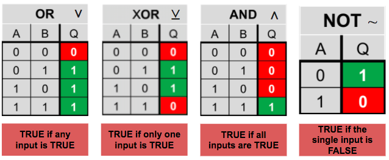
Overview
- Sentence that is either true or false i.e. Boolean 1 or 0.
- We can represent this in truth tables which show all possible logic combinations.
Tautologies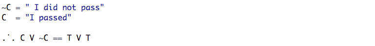
- Proposition always has a value of true.
- Logically equivalent propositions are when same truth value occurs under all circumstances e.g. ~P V ~Q == ~(P ∧ Q)
Fundamental equivalences
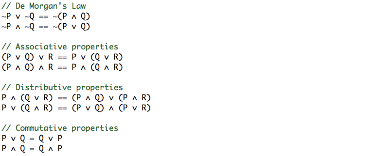
Conditionals
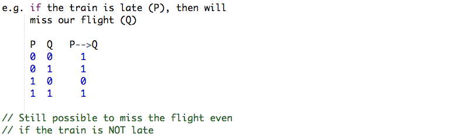
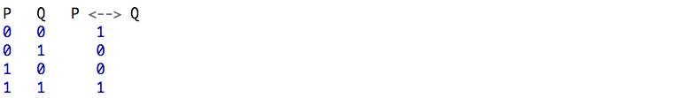
Biconditional
- is true when both P and Q have the same truth value.
- Can be written as
Proof of theorems
- Deduction → proving laws by repeated application of previously derived laws e.g. commutative property or De Morgan’s law. Aims to give most simplified expression.
- Perfect induction → proving laws using truth tables. Involves writing out all possible occurrences and choosing only possible outcomes. Also aims to simplify expression.
Implications
- Rules of inference usually given in a standard form (see figure on right).
- Allows us to make a quick conclusion by skipping a step or steps.
- Can use Modus Ponens to affirm (P → Q).
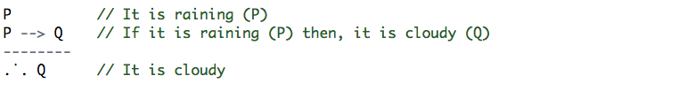
DM: Logical reasoning
Overview
- Drawing conclusions from premises using rules of inference and is based on identities and implications.
- This process simplifies expressions allow faster processing and allows to build simplified logic circuits which is more cost effective.
E.g.
- I either cycle to work or use my automobile.
- If it isn’t rainy, I cycle to work.
- If it is raining, I use my automobile.
- Unless the automobile does not start in which case I have to cycle to work.
- Unless I can get a push start from my neighbour.
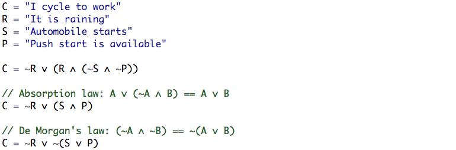
DM: Predicate logic
Overview
- Statements neither true or false.
- Usually would be proportioned but include unspecified variables e.g. x > 1
P(x) = x + 4 = 3 |
Functions allow us to refer to objects indirectly via some relationship | Quantifiers and variables allow us to refer to collection of objects without explictly naming them. |
Definitions
- Universe → collection of values which can replace a variable in a predicate.
- N-place predicate → number of involved variables
e.g. one-place == R(x) || two-place == R(x, y)
Satisfaction
- In a one-place predicate, if value from universe of variable can be substituted for variable to make predicate true, then value satisfies a predicate.
- N-tuple satisfaction → more than 1 variable that satisfies the predicate
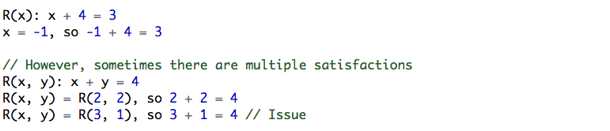
Quantifiers
- Express extent predicate true over range of elements, there are two types:
- Universal Quantifiers
Predicate is true for every element under consideration
e.g. “All cars have wheels”
- Existential Quantifiers
Predicate true for one or more element under consideration
e.g. “Not all days rain”
DM: Logic in action
Prolog
- General purpose logic programming language, associated with AI and computational linguistics.
- Initially aimed at natural language processing.
- Declarative language, declare facts and rules which can be used to define new rules.
Clauses: Facts & Rules
- Prolog programs describe relations defined by means of clauses.
- Form of head is true if body is true Head: -Body
- Rules’ body consists of calls to predicates (rule’s goals)
- Clauses with empty bodies are called facts
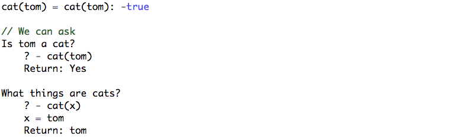
DS: Binary
Negative binary numbers
- Sign and magnitude → Leading bit is signed ‘1’ to represent negative number e.g. 1101 = -5
- One’s Complement → Flip every bit to represent negative numbers.
- Two’s Complement → Flip every bit and then add 1 to the result.
Binary fractions
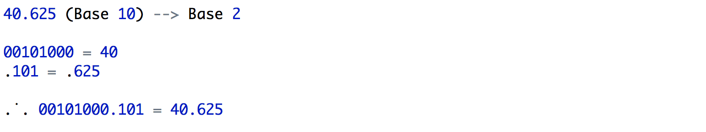
IEEE 754 floating-point standard
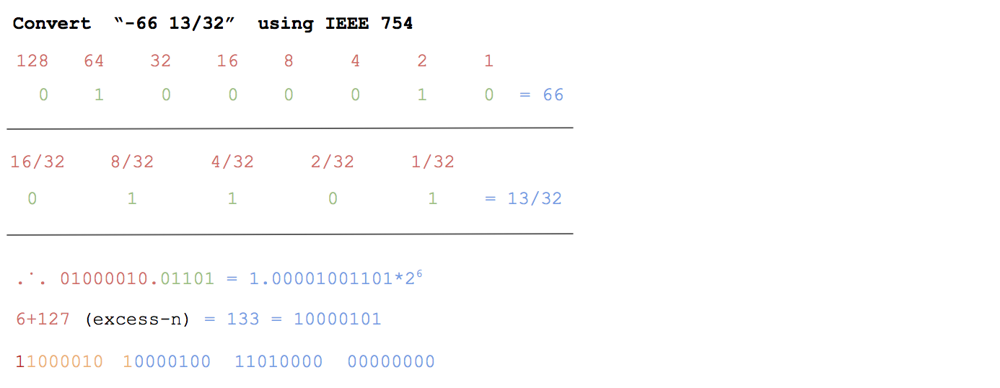
Floating point number comparison
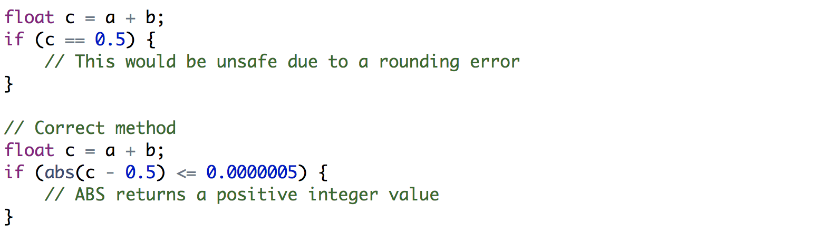
DS: Simple arrays
Declaration
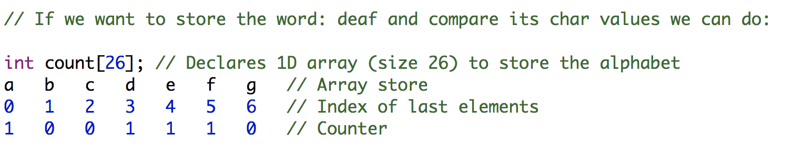
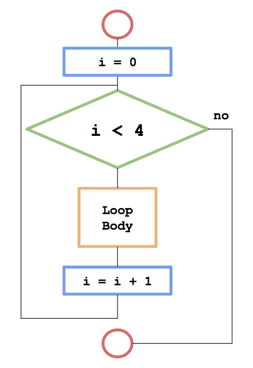
Flow charts
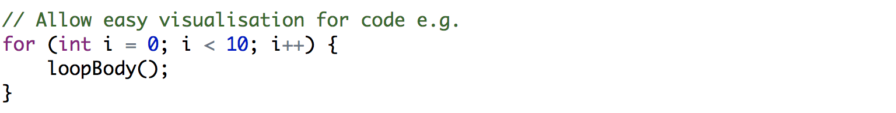
Indexing
- Arrays are random access data structures - makes it efficient if the index is known
- Memory address allocated to first cell is known as the base address.
- Arrays are homogeneous (same type), amount of memory needed is defined by type.
Comparing two strings
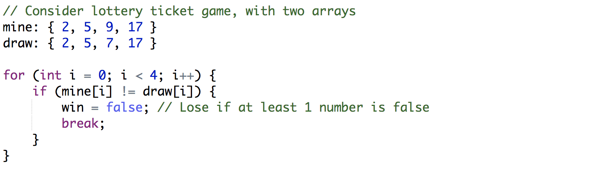
DS: Multi-dimensional arrays
2D array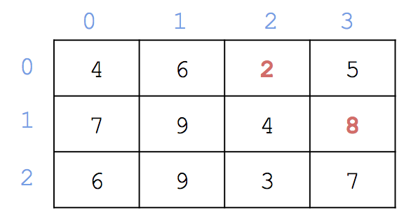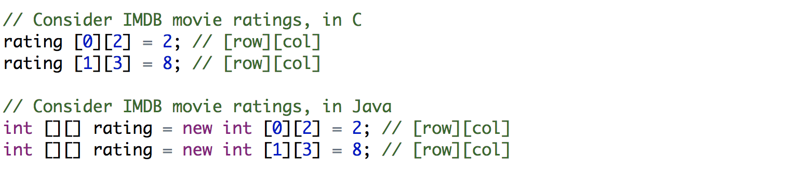
Variable size arrays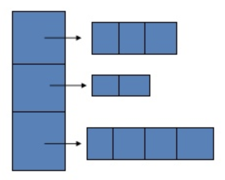
- Java treats multi-dimensional arrays as arrays of arrays, declared as the following:
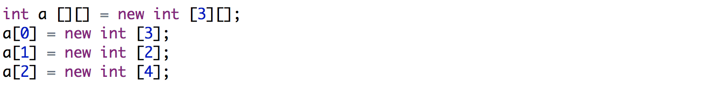
Initialising 2D array
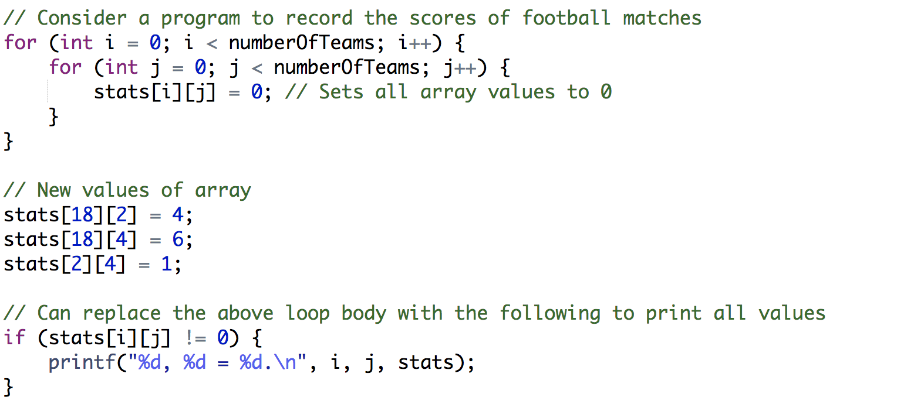
- Advantages → can represent multiple same data types and it’s random access memory meaning that it’s fast.
- Disadvantages → fixed size; so once initialised, can’t allocate more memory.
DS: Strings and Buffer Overflows
Strings in C
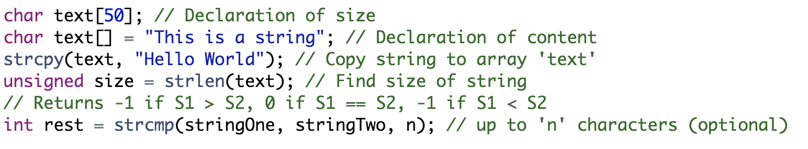
String scanning
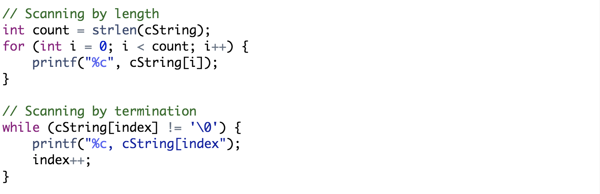
Buffer overflow
- Occurs when data written outside of boundaries of the memory allocated to a particular data structure.
e.g. char password[8];
strcpy(password, “thisStringIsTooLongForThat”);
- Hackers use this to input code → anything after 8 characters is an overflow, so computer may read malicious code.
- Can fix using a limit to a strcpy, this way only the first ‘n’ characters are copied
e.g. strcpy(password, “thisStringIsTooLongForThat” 7);
DS: Structures and Objects
Structure
- Heterogeneous → components of various types
- Each field (components) identified using a name.
- Structures holds various different properties of an entity
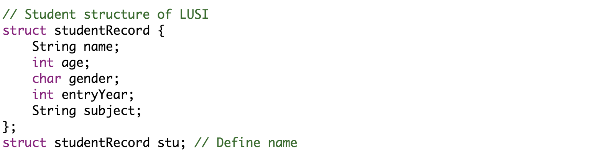
Objects

DS: Linked Lists
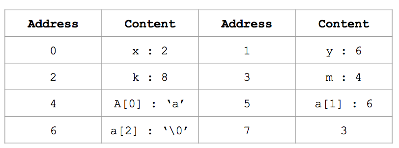
Pointers
- Computer data stored in memory cells.
- Each memory cell has an address and its content.
Linked list
- Series of connected nodes (cells) where data stores an integer field and pointer stores the next node address.
- The end of a list is marked with a NULL symbol.
Scanning linked list
- To access list, you need to use a pointer to the first node.
- We can scan the first item and continue scanning until NULL is found (end).
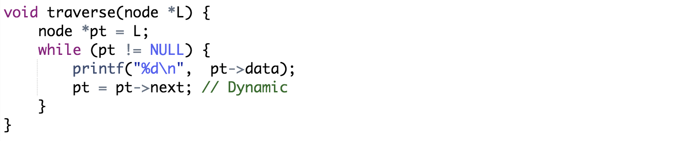
Creating space
- sizeof tells us how many bytes node structure occupies.
- malloc allocates bytes from memory and returns address of allocated memory space
e.g. node *L = malloc(sizeof(node));
Creating new node
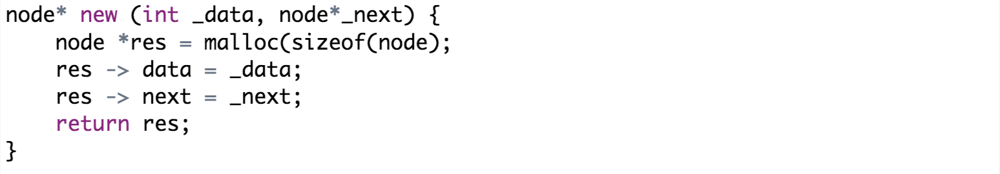
Building linked list
Adding to the list
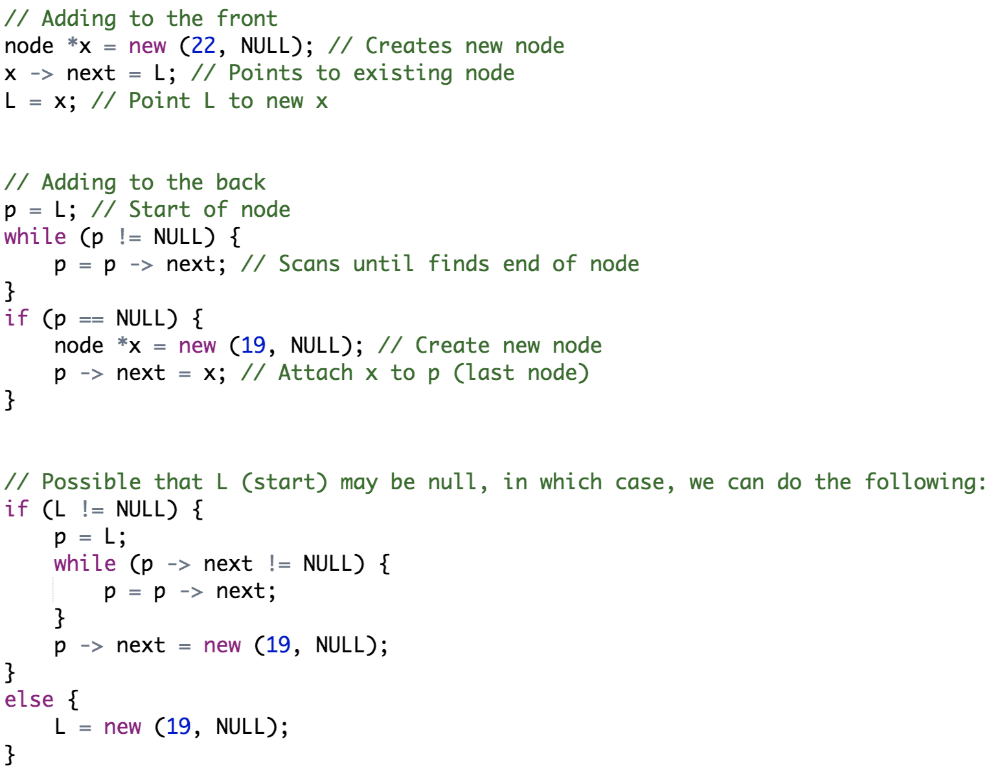
Removing from the list
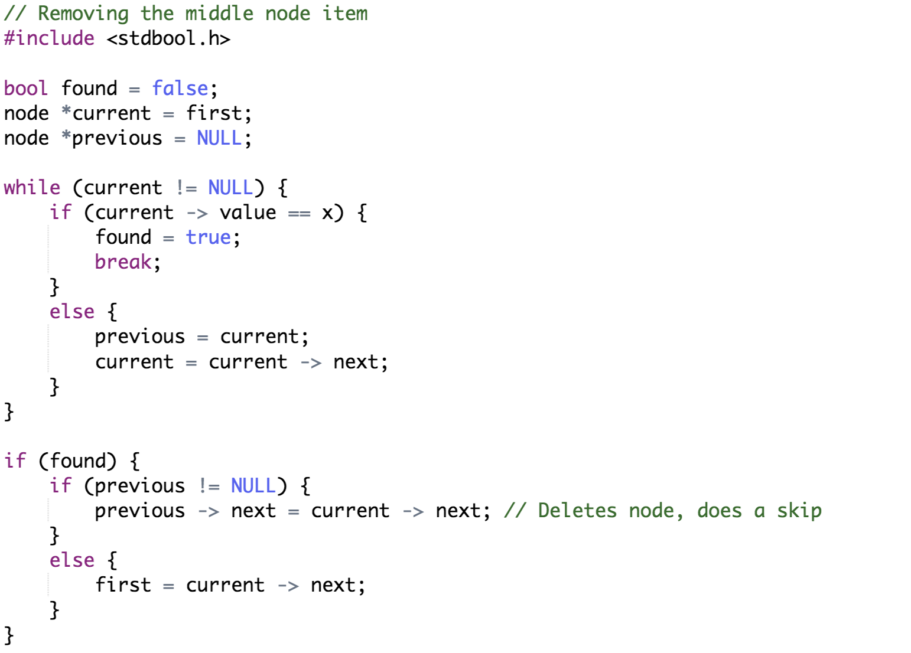
Doubly linked lists
DS: Regions of memory
Classic memory management
- Stack: Local variables, parameters, return addresses, grows downwards.
- Heap: Space requested via malloc() - resizes dynamically, grows upwards and lives until deallocated (free()).
- Static: Variables declared outside functions, does not grow or shrink e.g. global variables.
- Code (text): Loaded when program starts, normally doesn’t change.
Global memory allocation
- Assume 32-bit word size, can store/load 4 bytes in one operation where 8 hexadecimal digits represent memory address per byte.
Local variables allocation
- Allocate space when function called and reclaim space when return from a function.
- Stack: We can pop (look at the top and remove) and push (place on top).
- When function is called, a new stack frame is created and pushed onto the stack.
x
DS: Dynamic storage and memory management
Heap
- Contains linked lists of used and free cells (blocks).
- New cells created using malloc() and redundant cells should be released using free().
- Memory blocks can be different in sizes e.g.
pc = malloc(sizeof(PersonCell));
free(PersonCell);
- Releasing is dangerous as you may free an in-use cell resulting in hard to detect errors → for this reason, not all programming languages allow you to do this.
Garbage collection
- Java automatically finds unused objects i.e. nothing is pointing at them anymore.
- If creation of object fails, heap will look for redundant cells and free them, finally it will attempt to make the object again.
- The process may look like the following:
- Marking: Mark in-use objects, then free.
- Merging: If no free cell is large enough, merge adjacent free cells.
- Compaction: If still not enough, move all live cells to the bottom of the heap, leaving free space at the top.
Function reminder
- malloc() → searches for free cell, if not found, more is requested from the OS.
- free() → if adjacent cells to the free cell also free, if present, merges (coalesced) into a single but larger cell. If not found, the free list is just added to the free list for future.
Choosing a cell using malloc()
- Best-fit: Smallest cell that is big enough to store required data.
- First-fit: First cell that is big enough.
- Next-fit: Same as best-fit but we remember where searching had finished and resume from that point on next use.
ADT: Abstract data types and sets
fez | bow tie | clever | clumsy | null | null |
Adding to a set
Deleting from a set
ADT: Stacks
Adding and removing


Applications
- Can use stack in a compiler where it reads subroutines e.g. nested for loops, it may store each part of the code in a stack.
- A word processor may store information on the text in the stack e.g. we may make text bold inside a paragraph, inside a section, inside an article. We can easily step out each time.
- If we are going through a maze we may save each alternative in a stack when traversing through the maze.
Efficiency of Stack
- Doesn’t require performing scan thus operations are fast, constant-time operations.
- Size operations are also fast as it only needs to return value of “top + 1.”
- We can only remove element from the top, if we want to remove element from middle we need to pop the top and store it in temp register, after popping desired, put back.
ADT: Queues
Applications
- Jobs waiting to be executed by a computer operating system.
- Traffic approaching and crossing a road junction controlled by traffic lights.
Adding and removing from Queue

Efficiency
- Adding is quick no matter how many elements in queue, however, removing is affected by size of queue due to the shifting.
- The size operation is quick too as it is simply ‘back + 1’.
Circular buffer
Queue with Chain
Double-ended Queue (DEQue)
- You can add or remove at either end but not in the middle.
- Can implement using a two-way chain where each element has pointers to next and previous elements.
- The previous pointer and the next pointer of the last element are set to null.
Priority Queues: Type I
- Few discrete priority levels, implement with an array of queues, one for each priority level e.g. four levels:
Queue[] PQ = new Queue[4];
PQ[level].add(X);
Priority Queues: Type II
- Single queue of elements where each element contains information associated with object with its priority level.
- Store elements in queue in decreasing priority order and remove highest (front).
- Add: We scan to the correct position and then insert it there i.e. from beginning go past all elements with higher or same priority level.
- Remove: No scanning required, simply remove first item then shuffle down.
- Promotion: Increase each priority level by amount proportional to time item was waiting in queue → requires timestamping elements when added. Requires linear scan and then a sort to reorder queue using new priority values.
ADT: Graphs and Trees
Directed graph (digraph)
- Good example is using networking, one person can be friends with someone, but they can be friends back e.g. Twitter.
- If there is a link from one node to another, there may or may not be a link in th reverse direction.
Simple graph
- Example includes the roads between towns and villages, you can go back and forth.
- This would be a non-directed graph (simple graph) as there is no direction associated with a link i.e. simply connects node A to node B.
- Distance is not essential to be a simple graph, it would just show whether connection exists.
Tree
- The node at the top is called the root of the tree, trees are used to hold hierarchical information - simply a graph with no loops i.e. no paths can rejoin.
- Example, company A is divided into division C and M, M is further divided.
Graph representation
- Represent graph as ordered pair specifying list of nodes (vertices, weight) and arcs (edges).
- Node b is adjacent to another node if there is an arc (a, b) where a is the out-node and b is the in-node.
- Arcs cannot be duplicated e.g. {(a, c), (a, c)} cannot exist, thus the maximum number of arcs is w2.
- Graph that has maximum number of arcs is called a full graph, if none then empty. If only just a few then its density is sparse.
- Density: Proportion of n2 possible which are present, thus
G = (N, A)
N = {a, b, c}
A = {(a, a), (a, c), (b, a), (c, a), (c, b)}
Complementary graph
- Complement of graph G contains all the nodes of G and all the possible arcs that are not present in G → i.e. inverse.
- Denoted as G*, thus density(G*) = 1 - density (G)
- If one or more of the arcs of G* is deleted then it is a partial (reduced) graph.
Subgraph
- Graph derived from G with one or more nodes deleted and all of the arcs deleted that were associated with the deleted node.
Paths and distances
- Path of graph G is an ordered set of nodes such that each node is adjacent to its predecessor e.g. P = {(b, a), (a, c), (c, a), (a, a)}
- Simple (elementary) path: Doesn’t visit any node more than once.
- Loop (cycle): Path whose initial and final nodes are the same.
- Simple loop: Loop that becomes a simple path if its final node is deleted.
- Distance: Length of shortest path between two nodes.
- Diameter: Largest distance that can be found in a graph.
Connectivity
- In- and Out-Degree: Node has a degree (p, q) is p arcs point to and q arcs leave it where p is the in-degree and q is the out-degree.
- Disconnected: Graph can be divided into two subgraphs (connected components).
e.g. All nodes of G are in either G1 or G2 and all the arcs of G are in either G1 or G2 with no duplicates in either n or a.
- Connected: Strongly connected if atleast one path from every node connects to another. Otherwise, graph is weakly connected. If the graph is divided into subgraphs which are strongly connected then they are strongly connected components of graph.
Operations on graphs
- Analysis: How many nodes or arcs, what is the diameter or density, what is the connection like, is the graph a tree?
- Transformation: Form G*, then reduce, form a subgraph and delete nodes which cannot be reached from given start node (garbage collection).
- Travelling: Carry out traversal of a graph, visit all nodes in some order.
ADT: Graph traversal
Traversal
- Orderly visitation to every node in graph that can be reached from given start node, depending on its properties, it may not be possible to reach all other nodes.
- Must record if nodes has been visited once already, otherwise get stuck in loop e.g. using flags or bit attached to node, or using array of flags.
Depth-first-traversal
- Single path as far as possible, backtrack to previous junction and try alternative path when the way ahead is blocked.
Breadth-first-traversal
- Visit nodes of increasing distance from start node, use queue to remember recently visited nodes e.g. visit nodes in order of hierarchy.
Spanning tree
- We can highlight each movment to unvisited node to obtain reduced graph containing no loops.
- Strongly connected digraph if we can travel from any node to any other.
Shortest path (Dijkstra algorithm)
- Finds shortest paths from Node1 to Node2 in order of increasing distance from Node1.
- Algorithm stops when reaches target Node or when it finds out that it can’t reach it.
- Start from first node and branch to other nodes creating new arcs, algorithm will always choose the closest node in terms of arcs.
Minimal Spanning Tree
- Each edge of the spanning tree has a weight or cost associated with it.
- A minimum spanning tree refers to the spanning tree where the cost is no greater than any other spanning tree in the graph.
ALG: Tree traversals
Breadth-first-traversal
- Going away from the root where we start at the top of the tree and make way down.
- Going towards the root where we start from the bottom and make way up to root.
Depth-first-traversal (use example above)
- Preorder: Visit node before visiting each of its subtrees in turn e.g. A, B, C, D, F, E.
- Inorder: Visit the node’s first subtree, then the node, then the second subtree e.g. B, A, D, F, C, E.
- Postorder: Each of node’s subtrees in turn and finally the node itself e.g. B, F, D, E, C, A.
- Algorithms for traversals are all recursive, thus we need runtime stack to record where we have got to in pattern of methods calling methods.
Arithmetic expressions
- Example on the right, using preorder traversal gives us answer of ‘+a*-b4c’
- Using postorder traversal gives us ‘ab4-c*+’.
- Using inorder traversal gives us ‘a+b-4*c’
Adjacency Matrix
Parent Vector
String Representations
- We can use preorder or postorder to give a string representation for a tree.
- From ‘+a*-b4c’ we can generate a tree as we can distinguish operaands from operators.
ALG: Algorithm Introduction
Algorithm
- Step-by-step sequence of computations used to accomplish some task.
- Can be represented in computer code, pseudo code, flow charts, text, punch cards.
- Time: Resource, how many steps does it take to solve a problem.
- Space: Resource, how much memory does it take to solve a problem.
Input size
- Efficiency of a given algorithm may depend on the input size, e.g. which of the two algorithms are better?
- Time is directly proportional to input size.
Cost of operations
Linear search

ALG: Linear and Binary Sorting
Algorithmic efficiency
- Primary: Relationship between amount of data and running time of algorithm → refers to all the data items with size n.
- Secondary: Time taken by algorithms to process single data item.
Running times
Linear searching
- Check for end of array
- Check for the occurence of X
- Increment to the next array element
Binary searching
- Can only be used on sorted arrays, but has better primary efficiency than linear.
- Look at element A[M], where M is the midpoint, means you only need to look at half.
- Repeat process until number if found, i.e. keep dividing marker position by 2, if odd, doesn’t matter if rounding up or down.
ALG: Indexed Retrieval and Hashing
Indexed Retrieval
- Attribute of each object can be used as key for storage and retrieval.
- Allows objects stored in sorted order thus can use binary chop for efficiency.
Efficiency: Average Case | Efficiency: Worst Case |
If all sections quite small then up to 26x faster than linear search, but because some letters more common it is usually 10x. Tends to be faster than binary search. | All keys start with same letter meaning all records are in the same section, thus linear search through the whole array O(N). Can use binary search instead to compromise. |
Dealing with collisions
- Solution 1: Indexed retrieval, find collisions and adapt for non-alphabetic data, when data inserted, index of array is recomputed.
- Solution 2: Create linear array to store 26 alphabet elements, each element pointing to appropriate chain e.g. STORE[0] points to chain of objects starting with ‘A’.
Efficiency: Best Case | Efficiency: Average Case | Efficiency: Worst Case |
No collisions at all, each chain is empty or contains one item, retrieval is O(1). | Objects distributed across many chains giving better secondary efficiency. | Every object is on same chain thus like linear search, retrieval is O(N). |
Hashing
- Converts key (words or names) to an integer used to index an array.
- We can then request a specific letter through the use of the hash function to output the correct array index.
- However, collisions can occur when two words equal the same number.
ALG: Heap Sort
Overview
- Control tree shape in order to as close as possible to balanced tree
- Left-complete binary tree: Every level (row) except bottom is filled from left to right. Second node is always the left child of root, third node always right child.
Bubbling-up (sorting)
- Have to bubble-up to the full height of the tree, so insertion is limited by tree height Log2(N+1) as heap-insertion is complexity class O(Log2N).
- Thus to build min-heap of N nodes, primary efficiency is O(NLog2N).
Trickle-down (removal)
- Swap value to be deleted with last node and then swap values until sorted.
- Element must trickle down full height of tree so removal limited by tree height O(Log2N) as heap-retrieval is complexity class O(Log2N).
- Thus to retrieve tree of N nodes, primary efficiency is O(NLog2N).
Array storage (linear)
ALG: Sorting Techniques
Insertion Sort | - Progress through array from left, increment until sorted.
- Left segment is sorted (empty), right is not.
- Take first element of right segment and insert it in the correct position of the left.
- Has a complexity class of O(N2) based on worst case, average is N2.
|
Quick Sort | - Pick an element X from the set of data
- Put all elements < X on left, >= X on right and X at middle (partition).
- Quicksort left then Quicksort right.
- Has a complexity class of O(N2) based on worst case, average is NLog2N, thus faster than insertion.
|
Merge Sort | - Split the list into equal halves.
- Recursively sort each half.
- Recombine by merging the halves.
|
Sorting algorithms comparison
Tree Sort
- Builds a binary search tree (BST) from elements to be sorted and then traverses the tree in order so that elements come out in sorted order.
- BST stores a key of each item stored in the tree which allows fast lookup, insertion and lookup.
- Balancing the tree can help with searching as it improves the worst case.
- Average case efficiency is NLog2N but worst case efficiency is N2.
- Applications also include data compression and load balancing on parallel computers.
ALG: Correctness